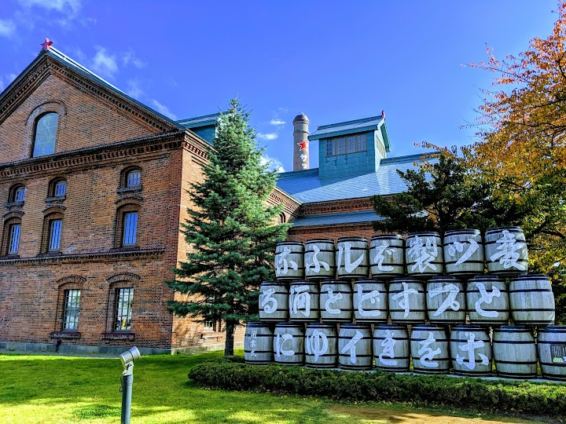
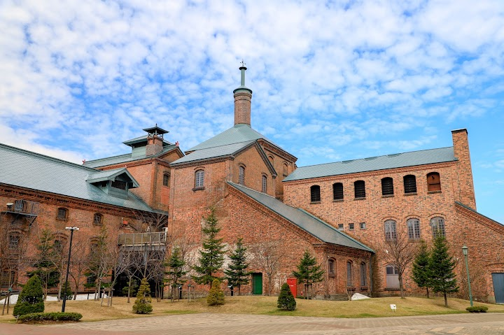
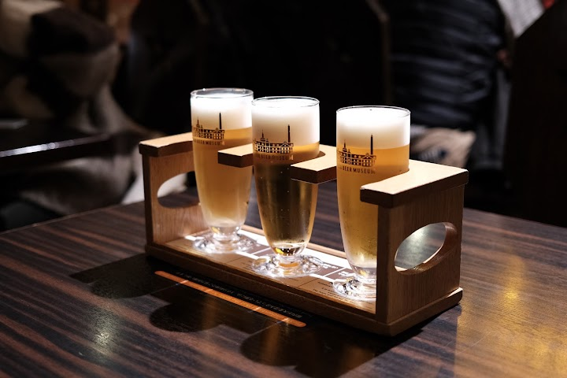
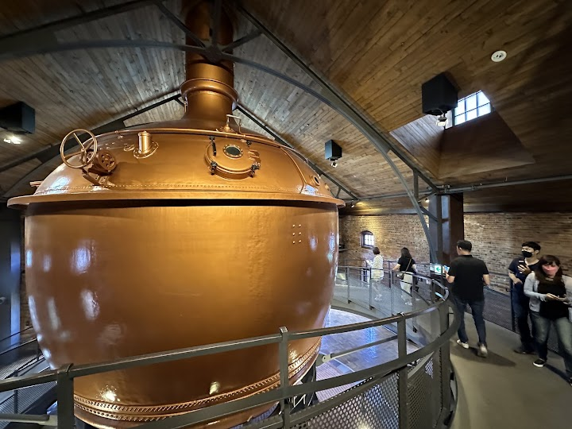
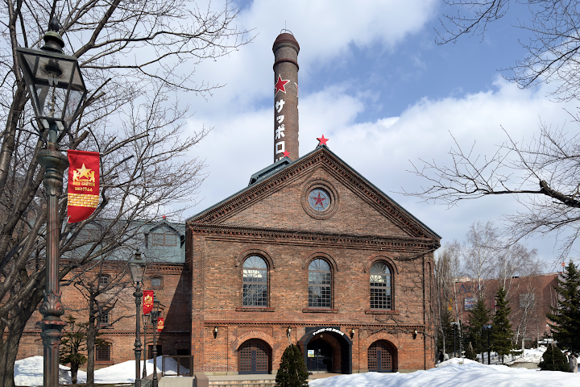

Sapporo Beer Museum (suggested)
Admission is free to this beer museum in a former factory, with exhibits, tours & paid tastings.
Open in Google Maps (street view, more photos and reviews there)






Visitor tips on finding it and getting there
Your visit to Sapporo or Hokaido will not be complete until you visit the Sapporo Beer Museum which was the birth place of Sapporo Beer and the brewery. Easily accessible by bus, Taxi or train from any part of the city. It is a large complex of old brewery factory which is converted into a beautiful museum, souvenir shop and a grill restaurant. You spend about half a day walking around enjoying the architecture and greenery. Enjoy the beer tasting cafe which serves brews only available in this part of the world. Lunch at the grill restaurant will be the perfect way to end your visit here. The